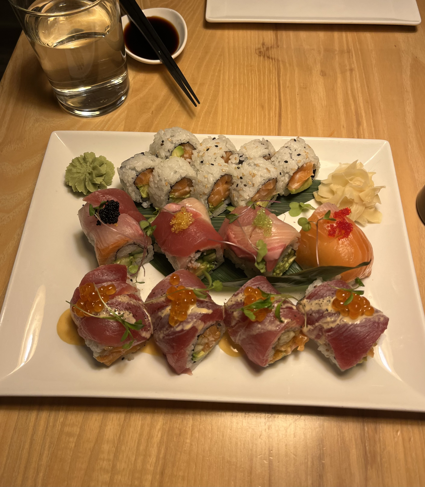
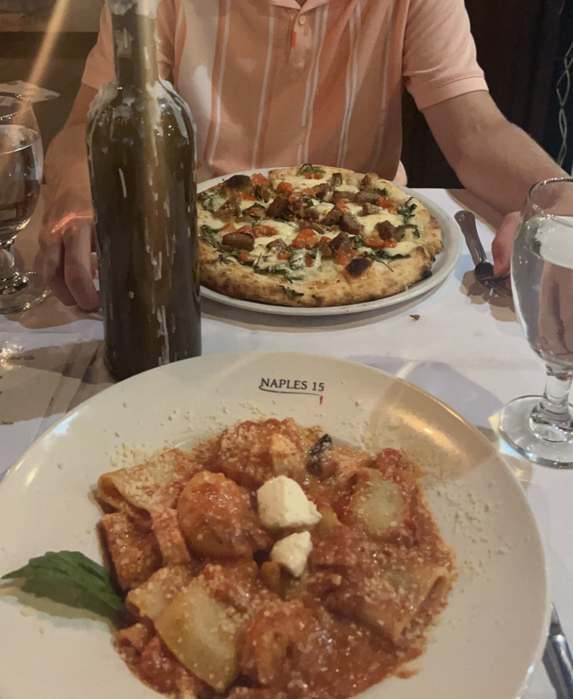
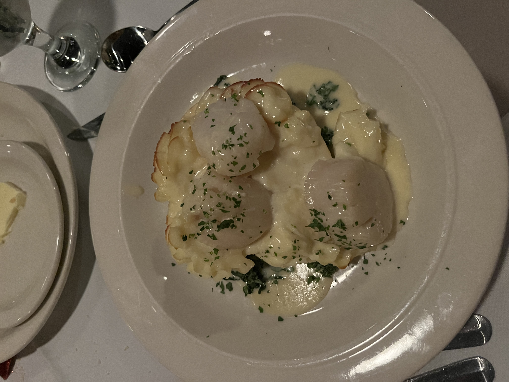
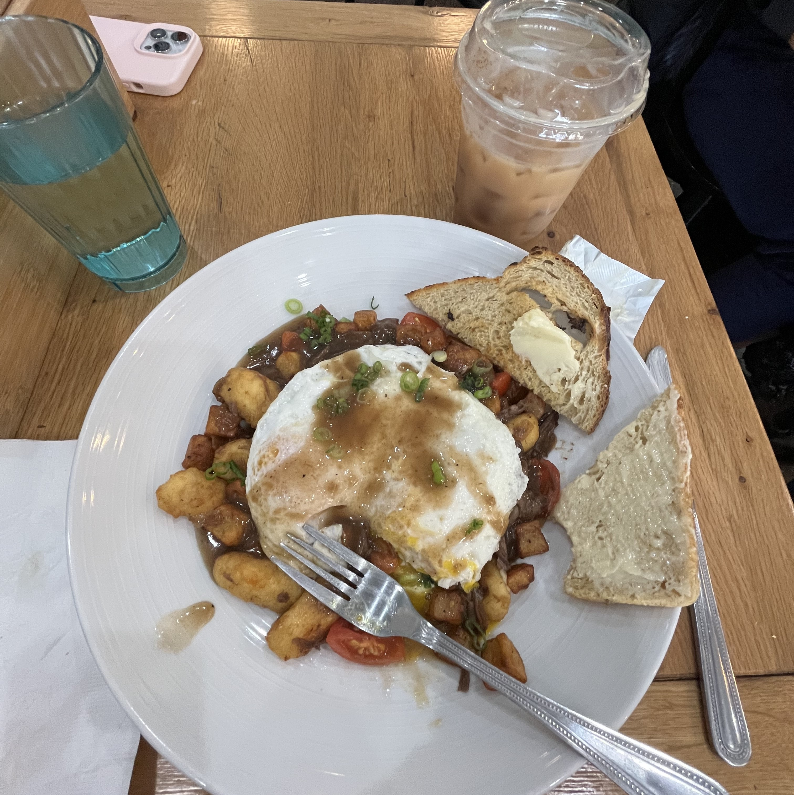

Favorite Restuarants in Madison
Most recently I went to Red for a special occasion. The food was absolutely amazing! We started with Sticky Wagyu Beef Ribs as an appetizer. The two of us shared the Tropic Thunder signature roll (bottom), the Rainbow roll (middle), and an Alaskan roll (top). 10/10, definitely recommend, and I will be going back!
My favorite Italian restuarant is Naples 15 just northeast of the Capitol. I've only gone once, but the pasta that I ordered with pink champagne sauce, fresh mozzarella, and scallops was incredible. It did not disappoint for my birthday dinner!
For Valentine's Day, a cute spot that wasn't impossible to get a reservation at and that also keeps their regular menu is Tornado Room. Escargot and Scallops over mashed potatoes were wonderful appetizers, followed by a cup of soup and a filet with a side of green beans. For dessert, the chocolate cake was so rich and I had leftovers for days.
My favorite coffee shop and study spot in Madison is Ancora. The Hella Stella breakfast sandwich on a Stella's Hot and Spicy Cheesy roll is my go-to with an iced chai latte. On the weekends, they have creative specials that definitely bring in a crowd, so I'd recommend going earlier rather than later!
